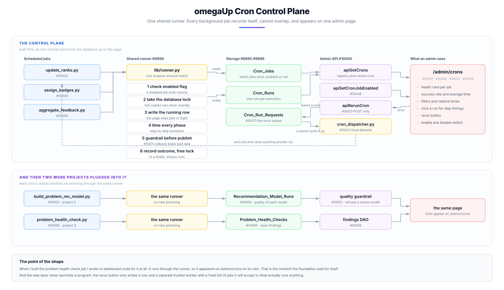
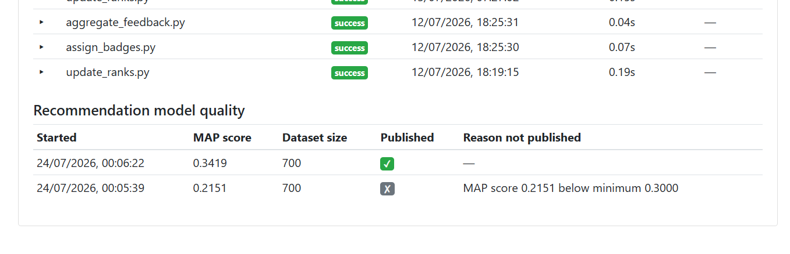
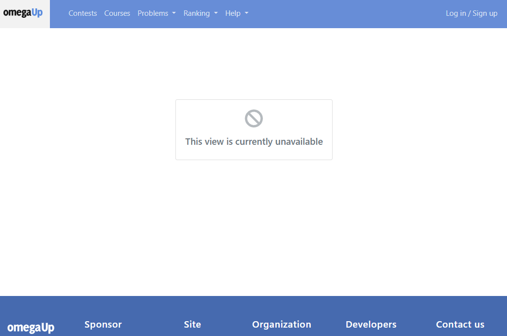
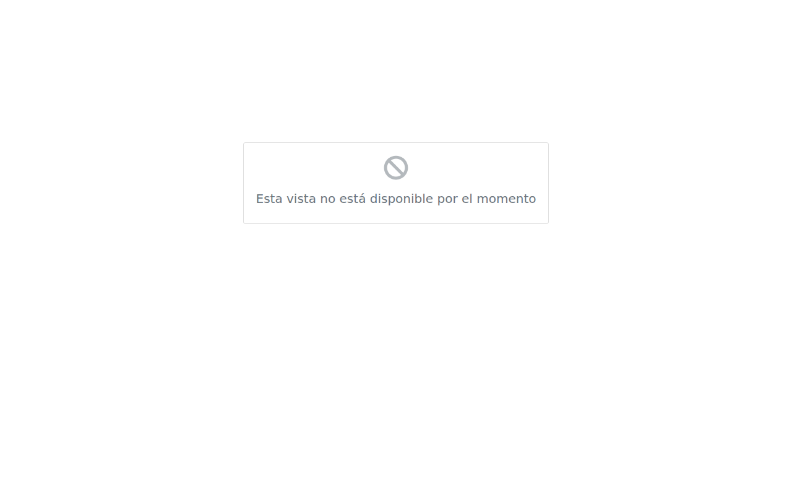
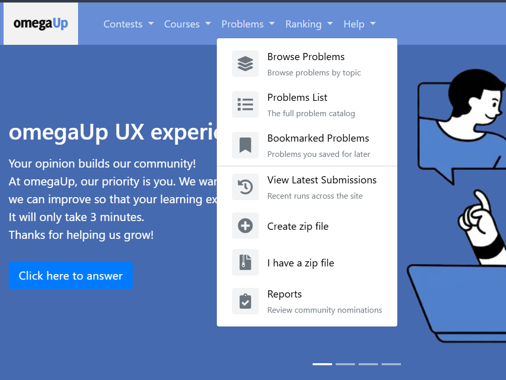
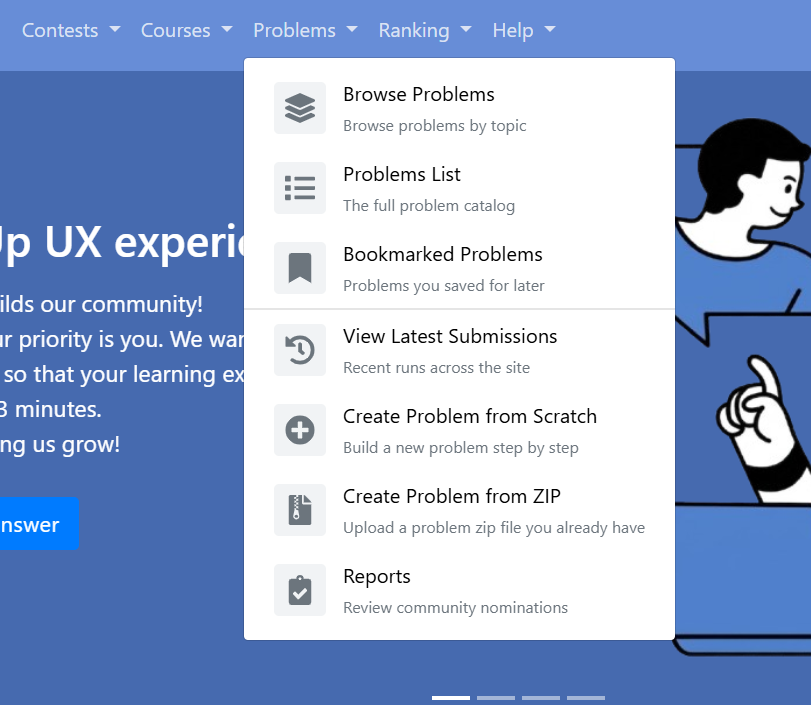
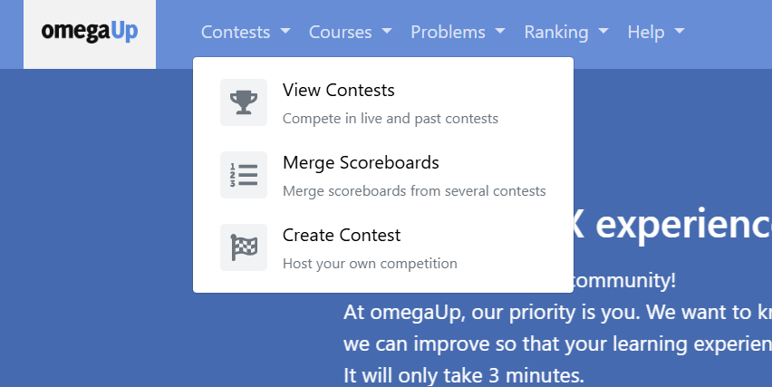
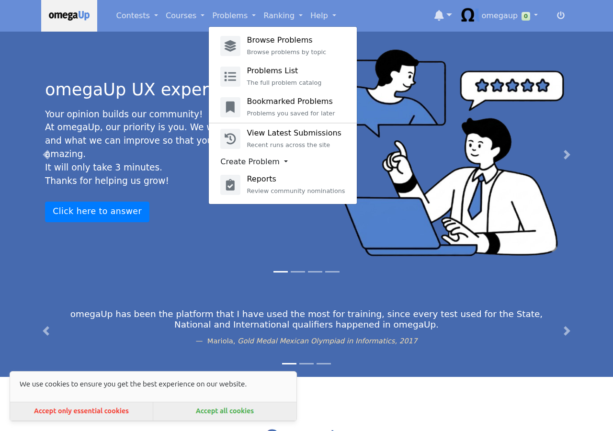
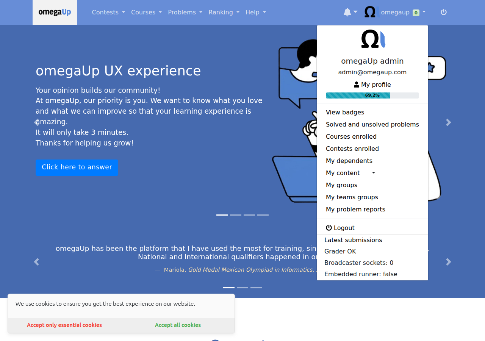

I made omegaUp's background jobs visible.
omegaUp runs a handful of jobs every night: rankings, badges, feedback, the model that suggests what to solve next. Nobody was watching any of them. If one failed, nothing said so, and the first sign was a student noticing their solve had not counted. I built the layer that watches them.
If you read nothing else
The Cron Control Plane
A registry of every job, a history of every run, a lock so two copies can never overlap, an admin page to see it all, and a rerun button that is safe to press.
Model training, measured
The problem recommendation model is now trained on a schedule, its quality is recorded every time, and a guardrail refuses to publish a model worse than the one already serving students.
Problem health checks
A nightly job that finds problems which quietly stopped working, so the platform hears about them from itself rather than from a frustrated student.
Silent failure is the default
omegaUp is a free competitive programming platform used across Latin America, and behind the site a few Python scripts run on a schedule doing the unglamorous work. They recompute the rankings, hand out badges, aggregate the feedback students leave on problems, and train the model that suggests what to try next. In production only three of them are actually scheduled, and the order they run in is enforced by nothing more sophisticated than the gap on the clock between them.
What kept bothering me as I read through them is that nobody was watching. There was no record anywhere that a job had run at all, so if last night's ranking job died halfway through, the first sign of it would be a student noticing days later that their solved problem had never counted. Nothing stopped two copies of the same job running at the same time either, and that matters more than it sounds: the ranking job used to delete every row of the rankings table and then write fresh ones, so two copies overlapping could leave you with half a leaderboard, or duplicated rows, or people who briefly vanished from the site entirely. The worst part of that scenario is that nothing raises an error. It just quietly produces wrong data and carries on.
On top of that, an admin who wanted to rerun a job had to get shell access to a production pod to do it, and a student had no way of knowing how fresh the rankings they were looking at actually were. None of this is exotic or clever. It is the ordinary, boring way that scheduled work goes wrong everywhere, and it stays hidden precisely because it is so quiet.
How it fits together
Everything below is one idea: every job goes through the same small piece of code on its way in and out, and that is what makes all the rest possible.

The Cron Control Plane
Twelve pull requests, built as a stack where each one depends on the one below it, cutting from the database through to the page.
A registry and a history
#9995 adds two tables. One lists the jobs that exist, with their schedule and an enabled flag. The other stores one row per execution: when it started and finished, how long it took, whether it worked, how many rows it touched, the timing of each step inside it, and the error text if it failed. #9996 wraps both in typed data access objects so nothing else writes raw SQL against them.
One shared runner
#9998 is the keystone. It is one small helper that a job wraps its main() with:
| with lib.runner.run(parser.prog, args) as cron_run: with cron_run.phase('update_users_stats'): update_users_stats(...) cron_run.set_rows_affected(rows) |
On the way in it checks whether the registry says this job is switched off, takes a lock, and writes a row saying the job has started. On the way out it records the outcome, the duration, the per step timings and any error, then releases the lock.
Why the lock lives in the database
These jobs can run on different machines, so a lock file on one machine's disk means nothing to a job on another. The database is the one thing they all share. It also solved the thing I was most worried about: if a job dies while holding the lock, the database ties that lock to the connection, so when the process dies the lock releases by itself. A crash cannot jam the door shut forever, and I did not write a line of code for that. Choosing the database as the place gave it to me.
Why the history stores a name, not an id
Juan Pablo asked about this in review, and the textbook answer is that I should store the id. Three reasons I did not. The runner writes the "started" row before it ever touches the registry, using the script's own name. Some jobs that use the runner are not in the registry at all, and if the history demanded a registry id those runs either could not be recorded or the runner would start creating registry rows by itself, which turns a curated list into one that fills itself with junk. And this is a history table, so it should survive a job being renamed or removed.
A rerun button that does not open a door
#10021 is the one I thought hardest about. The obvious version is that the button sends a request and the server runs the job. I deliberately did not do that. The moment a web page can cause a program to run on your servers you have built a door, and doors get picked.
Instead the button writes down a request. A separate trusted worker, already running on the inside, picks that row up and runs the job, and only jobs on a fixed list it knows about. The web page never runs anything, it leaves a note. Two things fall out for free: every rerun is recorded, so you can see who asked for what and when, and the person pressing the button needs no server access, which was the entire point.
A guardrail on the rankings
#10011 checks the freshly computed ranking before it is published, inside the same transaction. If it is empty, if scores have gone negative, or if more than half the previously ranked users have vanished, it raises and the whole thing rolls back.
I proved that rather than asserting it. I ran the real job against a seeded database twice. On the happy path it logs that the audit passed and exits zero. On a forced failure it raises, exits non zero, and the checksum of the rankings table is identical before and after, which is what "the rollback left the data untouched" actually means.
The page
#10008 puts /admin/crons on top of the API, and #10048 makes it readable: a health card per job with its success rate and average duration, filters, "2 hours ago" style times with the exact timestamp on hover, job names shown as "Update rankings" rather than update_ranks.py and schedules as "Every day at 08:19" rather than 19 8 * * *, with the technical value kept on hover in both cases.
Scheduled recommendation model training
omegaUp has a model that answers "this student just solved problem X, what should they try next". Before this work it was an on demand script. Nobody was on the hook for running it, there was no record of what any past training produced, and a bad run would silently overwrite the good model file that was serving real students.
Now every run writes down how good the model it produced was, using a MAP score. That is a single number between zero and one measuring how often the problem the model suggested next turned out to be one the student actually solved, weighted so a good suggestion near the top of the list counts for more. Higher is better. On the dashboard I put that explanation behind an info icon in those exact words, because no admin should be expected to know the term.
The guardrail applies two rules before the model file is written. An absolute floor, so a model below a minimum score never ships. And a regression bar against the last published model, because the floor on its own only catches disasters: a model that squeaks over the bar while being clearly worse than the one it replaces would sail straight through.

When either rule fires the old model file stays exactly where it is, a row is stored with the reason in plain words, and the run is marked as a failure so it is visible rather than silent.
Automated problem health checks
A problem on omegaUp can stop working after it is published, and nothing errors loudly. Students just hit a wall. Until now the only signal was somebody filing a report, which means the platform found out about broken problems from the people it had already failed.
The job runs nightly and looks for four specific things.
| Check | Severity | What it means |
|---|---|---|
| judge_errors | error | Five or more recent submissions to one problem came back as a judge or validator error. Students are submitting correct code and getting a system failure. The worst one, because to the student it looks like their fault. |
| no_languages | error | A public problem with no submission languages enabled. Listed, browsable, and impossible to submit to. |
| never_solved | warning | Public, twenty or more submissions, zero accepted. Either the test data is wrong or the statement is misleading. A warning rather than an error, because a genuinely brutal problem can look like this. |
| deprecated_public | warning | Retired, but still visible to students. |
How the findings are stored matters as much as the checks. Each one is upserted against a unique key on the problem and the check type, so it keeps the date it was first detected. That is the difference between "this is broken" and "this has been broken for three weeks". Running the job twice produces no duplicates, and a finding that stops appearing is marked resolved rather than deleted, so the history survives.
I built it database only, with no access to the problem files. Those sit behind a service that needs signed authentication, and they are already validated when a problem is uploaded. The breakage this job catches happens after that, which is exactly what the database knows about. So it needed no new infrastructure, and no dashboard code either.
What I proposed, and how it grew
My proposal was narrow, and looking back I think that was the right way to start. It was almost entirely about cleaning up four Python scripts: five specific SQL problems, the near total absence of unit tests, fourteen bare except: blocks, some magic numbers, badge atomicity, and a slightly alarming piece of string replacement involving NOW(). The test situation was the starkest part of it. When I wrote the proposal, two of those four scripts had zero Python unit tests between them.
Three honest things then happened to that plan. The first is that eight of my proposal items were solved by other contributors, either shortly before my coding period or during it. The correlated subquery rewrite I had scheduled for week four, for example, was merged by somebody else before I ever got there. I checked each one against main and re-scoped rather than redoing finished work, and I kept track of the lanes other people were actively working in so I would not collide with them.
The second is that one item was simply wrong, and I withdrew it myself after researching it properly. That is the shadow table swap, and it has its own section further down because it taught me more than most of the things that worked.
The third is that one item turned out not to exist. Proposal problem five was duplicate badge notifications, and I could not reproduce it however I tried, because a per badge commit and rollback that had landed in an earlier pull request already rolls back the badge and its notification together. I wrote that down as a finding rather than inventing a fix for a problem that was not there.
Then the midterm changed the shape of the second half. I passed, and the feedback was that the work so far did not add up to one thing you could point at and say he built that. It was many small improvements, each individually useful, spread thinly across existing scripts. What was wanted instead was something vertical: a single project cutting through the database, the backend, the jobs, the interface and the tests, where the result is a feature a person can actually see and use.
I thought that was fair. Rather than pick the next project on my own, I spent a couple of days reading omegaUp's production deployment repository so I would be arguing from facts instead of assumptions, wrote up fourteen candidate projects, and sent them to my mentor with the note that I was not attached to any particular one and would much rather know what the organisation actually needed.
So the second half became three projects sharing a single foundation, and none of the first half went to waste, because a vertical project needs exactly that kind of groundwork sitting underneath it.
Work outside the cron project
The cron project was the main thread but it was not the only one, and two other pieces of work ran alongside it through the summer. Both are merged.
The first was a generic way to tell somebody that part of the site is switched off, in #9919. omegaUp needed this for the ephemeral grader, and the easy version would have been to write the message into that one page. I built one small component the whole platform can use instead, in every language the site supports. Juan Pablo then made a point I had missed, which is that the way I had wired it in would mean copying a file every time another view needed disabling, so #10025 made the entry point generic and driven by the page payload.


The second was rebuilding the navigation menus from a single configuration, in #9968, which built on #9871 and #9801 before it. The menus had been hand written markup repeated per menu, so I extracted a reusable item with an icon, a title and a description, then rebuilt every menu from one configuration file with per entry visibility rules, which is the groundwork for eventually showing different entries to different kinds of user.
The clearest illustration of what a review is actually for is the pair below. On the left is what I first shipped, where two of the entries read Create zip file and I have a zip file, which make sense only if you already know what they do. Juan Pablo asked for something more descriptive, and the version on the right is the result.






There is an honest footnote to that one. #9967 was the earlier version of the same change and I closed it myself, because #9968 was stacked on top of it and got squash merged first, which carried #9967's content into main and left it with nothing to do.
Two smaller things also merged during this period: blocking GET requests on the clone, open and accept endpoints, which was a security fix, and returning the contest alias in the clarification create response.
Every pull request
Thirty one pull requests between 26 May and 3 August. Each one has an issue written before it.
Cron Control Plane
| PR | Opened | Status | Change | What it does |
|---|---|---|---|---|
| #9995 | 2026-07-13 | merged | +64/-0 | add cron control plane tables |
| #9996 | 2026-07-13 | merged | +1345/-3 | add cron control plane dao |
| #9998 | 2026-07-13 | open | +497/-0 | add cron runner library |
| #10000 | 2026-07-13 | merged | +333/-0 | add cron admin api |
| #10003 | 2026-07-14 | open | +522/-35 | record update ranks runs |
| #10008 | 2026-07-14 | open | +548/-0 | add cron admin dashboard |
| #10009 | 2026-07-14 | open | +545/-89 | record badges and feedback runs |
| #10011 | 2026-07-15 | open | +580/-35 | add ranking audit guardrail |
| #10021 | 2026-07-16 | open | +3306/-3 | add cron rerun |
| #10022 | 2026-07-16 | open | +602/-132 | record remaining cron runs |
| #10023 | 2026-07-16 | open | +3336/-3 | add cron dashboard e2e |
| #10048 | 2026-07-26 | open | +4438/-3 | improve cron dashboard with health cards filters and auto refresh |
Cron tests, queries and reliability
| PR | Opened | Status | Change | What it does |
|---|---|---|---|---|
| #9883 | 2026-06-02 | open | +542/-0 | feat(cron): add unit test infrastructure and aggregate_feedback/utils tests |
| #9889 | 2026-06-07 | open | +942/-23 | feat(cron): add update_ranks unit tests |
| #9900 | 2026-06-12 | merged | +22/-30 | fix(cron): parameterize coder_of_the_month queries |
| #9901 | 2026-06-12 | merged | +16/-16 | fix(cron): replace bare except clauses with typed except |
| #9903 | 2026-06-12 | merged | +38/-2 | fix(cron): merge user rank with upsert instead of full reinsert |
| #9914 | 2026-06-19 | open | +203/-80 | add structured phase logging to crons |
| #9920 | 2026-06-21 | open | +1146/-23 | feat(cron): add assign_badges unit tests |
| #9940 | 2026-06-26 | merged | +29/-15 | refactor(cron): name acl/role magic numbers with constants |
Recommendation model training
| PR | Opened | Status | Change | What it does |
|---|---|---|---|---|
| #10050 | 2026-07-27 | open | +3957/-133 | add recommendation model runs table |
| #10051 | 2026-07-27 | open | +4314/-134 | record and guard recommendation training |
| #10052 | 2026-07-27 | open | +4908/-133 | add recommendation model dao and dashboard |
Problem health checks
| PR | Opened | Status | Change | What it does |
|---|---|---|---|---|
| #10065 | 2026-07-31 | merged | +34/-0 | add problem health checks table |
| #10066 | 2026-08-01 | open | +4394/-133 | add problem health check cron |
| #10069 | 2026-08-03 | open | +5157/-133 | show problem health findings for admins |
Alongside the main project
| PR | Opened | Status | Change | What it does |
|---|---|---|---|---|
| #9871 | 2026-05-26 | merged | +352/-150 | Extract NavbarItem component for help menu |
| #9919 | 2026-06-21 | merged | +142/-0 | add view unavailable component |
| #9967 | 2026-07-04 | closed | +368/-67 | extend navbar item style to remaining submenus |
| #9968 | 2026-07-04 | merged | +676/-233 | build navbar menus from a single configuration |
| #10025 | 2026-07-16 | merged | +25/-6 | make view unavailable entrypoint generic |
Every issue
Thirty issues. I wrote the issue before the pull request every time, which is how the three parent issues ended up being the spine of the whole second half.
| Issue | Opened | Status | Title |
|---|---|---|---|
| #9868 | 2026-05-26 | closed | As a developer, I want a reusable NavbarItem component so that submenu entries are easier to maintain |
| #9869 | 2026-05-26 | closed | As a contributor, I want editable fields in the feature request form so that I can fill in the As a / I want / so that prompts directly |
| #9870 | 2026-05-26 | closed | Refactor navbar help submenu into a reusable NavbarItem component |
| #9882 | 2026-06-02 | open | Add unit test infrastructure for cron scripts |
| #9888 | 2026-06-07 | open | Add unit tests for update_ranks.py ranking logic |
| #9890 | 2026-06-07 | open | Add unit tests for assign_badges.py |
| #9897 | 2026-06-11 | closed | Add a generic "View unavailable" component |
| #9899 | 2026-06-12 | closed | Parameterize string-built queries in coder_of_the_month.py |
| #9902 | 2026-06-12 | closed | Avoid full delete and reinsert of User_Rank in update_ranks |
| #9904 | 2026-06-12 | open | Prevent and merge duplicate school profiles |
| #9913 | 2026-06-19 | open | Emit structured per-phase logs from cron scripts |
| #9939 | 2026-06-26 | closed | Replace acl_id/role_id magic numbers in cron scripts with named constants |
| #9962 | 2026-07-03 | open | Extend the navbar item style with icons and descriptions to remaining submenus |
| #9966 | 2026-07-04 | closed | Build the navbar menus from a single configuration with visibility rules |
| #9992 | 2026-07-13 | open | Cron Control Plane : an observability and operational tooling for background jobs (parent) |
| #9993 | 2026-07-13 | closed | persistant cron execution history by registry and run tables |
| #9994 | 2026-07-13 | closed | DAOs for the cron tables |
| #9997 | 2026-07-13 | open | Reusable cron runner that records runs and prevents overlap |
| #9999 | 2026-07-13 | closed | Admin API for cron run history and health |
| #10002 | 2026-07-14 | open | Record update_ranks executions through the runner |
| #10004 | 2026-07-14 | open | Admin dashboard page for cron jobs |
| #10007 | 2026-07-14 | open | Record assign_badges and aggregate_feedback through the runner |
| #10010 | 2026-07-15 | open | Pre-publish guardrail for the ranking job |
| #10017 | 2026-07-16 | closed | Make the view unavailable entrypoint generic and driven by the payload |
| #10018 | 2026-07-16 | open | Let admins safely rerun a cron job |
| #10019 | 2026-07-16 | open | Record the remaining crons through the runner |
| #10020 | 2026-07-16 | open | End to end test for the cron dashboard |
| #10047 | 2026-07-26 | open | Improve the cron dashboard with health cards, filters, relative times and auto refresh |
| #10049 | 2026-07-26 | open | Make the recommendation model training scheduled, recorded and guarded (parent) |
| #10064 | 2026-07-31 | open | Detect problems that silently stopped working (parent) |
How I worked
The first thing I had to accept was that I could not start with the interesting part. When I opened the cron scripts in May they had no test infrastructure at all, and I mean none rather than a little. There was a good reason nobody had bothered. These scripts talk straight to the database, so every single function expects a live MySQL connection, and testing something as simple as whether the ranking logic sorts people correctly meant first standing up a database and filling it with the right rows. That is slow, it is awkward, and it breaks the moment somebody runs it on a different machine. So it had never been done, and I understood why.
What I built instead was a fake database, in #9883, one that behaves closely enough like the real thing that the existing code runs against it without being changed at all. Only once that existed could I write tests for the ranking logic and the badge logic, which is what the next two pull requests do. It felt like a detour at the time and it was the single most useful week of the summer.
I would defend that against anyone who called it box ticking, because of what I built afterwards. I built a button that reruns jobs and a guardrail that decides whether data goes live. Both of those are only safe if one specific thing is true, which is that running a job twice leaves the database exactly as running it once did. If that holds, the rerun button is a convenience. If it does not, the button is a way to corrupt production data with a single click, and I had no business building it. So the chain runs backwards from the feature to the foundation: without a fake database there are no tests, without tests there is no proof of that property, and without the proof the rerun button is simply irresponsible.
The other habit that changed during the summer was how I size a pull request. I had been writing them for my own convenience, and partway through the control plane Juan Pablo told me one of them was doing too much.
So I broke everything into a stack, where the tables come first, then the code that reads them, then the API, then the page, and each piece is small enough to review in one sitting. I also learned to keep the later ones as drafts until the one below them merges, so that nobody opens a pull request and finds it full of code they already approved last week. That last part I learned the hard way, because one of my stacked pull requests got squash merged out of order, which dragged its dependency into main and left that dependency with nothing to do. The lesson I actually took from all of it is that reviewer attention is the scarcest resource on a volunteer maintained project, and that optimising my own convenience against it is a bad trade even when it feels efficient.
Reviews taught me the most when they were unkind to my code. Ankit went through my test infrastructure and left thirteen inline comments, and several of them were real bugs in the fake database itself rather than style notes. The worst was that my fetchone() never advanced, so it handed back the first row forever, which means any test that looped over results would have passed cheerfully while testing nothing at all. Another was that my SQL matching was case sensitive in one direction only. A third was that I accepted a dictionary argument and then quietly threw it away.
One of the bugs he flagged I checked and disagreed with, politely, after tracing it back to the real caller and finding it could not actually be reached because of a guard further up. I wrote that down as latent rather than patching something that could never happen, which felt more useful than reflexively agreeing.
What went wrong, and what I learned from it
The hardest thing I did all summer was withdraw a promise I had made in my own funded proposal. I had committed to rebuilding the rankings in a second table and swapping it in with a rename, which is a well known pattern and sounds clever in a proposal. When I sat down to actually research it in June I found five separate problems with it. A rename is a schema change, so it forces a commit and destroys the single transaction the phase depends on. Copying a table does not bring its foreign key constraints with it, and constraint names are unique per database, so the swapped table either silently loses three of them or needs an awkward alternating naming scheme. It needs privileges the production database user may not even have, and I had no way to verify that from where I was sitting. It changes what the coder of the month calculation sees while it runs. And after all of that it still rewrites every row every day, so the write load is not reduced at all, merely moved somewhere else.
Then I found the part that settled it. The problem the swap was meant to solve had already been fixed by somebody else while I was writing the proposal. The phase had become a single transaction, which means readers already see the complete old ranking the whole way through, so the empty leaderboard scenario I had written all that against simply no longer existed. I replaced it with an upsert that stays inside the transaction, needs no special privileges, keeps the foreign keys where they are, and follows a pattern already used a few lines further down the same file. Having to say that my own proposal item was wrong was uncomfortable, and it was still much better than shipping it and being wrong quietly.
A different kind of difficulty arrived after the tables merged, when the next pull request started failing in a way I could not argue my way out of. One required check insisted that a generated schema file be byte for byte identical to the main schema. Another required check crashed while trying to read that same file. Both were mandatory, so every change I made to satisfy one broke the other, and I spent most of a day going in circles.
The crash turned out to be at one specific table, caused by a full text index clause that another contributor had added recently and that the schema parser had never learned to understand. The reason nobody had tripped over it before was that main's copy of the generated file was simply out of date and did not contain that line yet, so mine was the first change to regenerate it and therefore the first to stand on a landmine that had been sitting there quietly for weeks. The fix was one line in the parser, and I verified it by regenerating everything and confirming the output was byte identical, so the change only relaxes what the parser will read and cannot alter what it produces. I have kept the general lesson: when two automated checks contradict each other, the contradiction is usually pointing at something real rather than at your own mistake.
The bug I am most glad about is one that only appeared because I wrote the test. In the health checks, the step that closes findings which are no longer detected was reading the clock after writing the new ones rather than before. On a slow run, a finding written moments earlier could be judged as not seen this run and closed immediately, which means the job would confidently report a problem as fixed at the exact instant it discovered it. The fix was to take a single timestamp at the start and use it throughout. This is the strongest argument for tests I have from the whole summer, because the bug was sitting in code I had written minutes earlier and was certain was correct.
Closely related, and almost worse, is something I nearly shipped without noticing. Three of the four health checks fired on the first real run and the judge errors one found nothing. My first reaction was relief, because nothing found means nothing broken. That was completely wrong. It found nothing because the development database contained no runs with that kind of error at all, so the check had never actually been exercised even once. I was one merge away from shipping a check I had never seen work. I seeded the failure case and watched it fire before I was willing to trust it, and I now assume that no results and not working look identical from the outside until proven otherwise.
Not everything difficult was interesting. Keeping the pieces small and ordered is unambiguously right for reviewers and it is genuinely expensive for me. Every time something merges I rebase the next one so that its diff stands on its own, and when the tables merged the migration number changed, which meant every later database change had to shift too. At one point a single change to a shared file had to be propagated across seventeen branches because all of them descended from it. I still believe the trade is correct, since the alternative is pull requests nobody can review, but I badly underestimated the bookkeeping when I chose it.
The thing I found hardest emotionally had nothing to do with code. At the midterm, not one of my cron project pull requests had been merged. All of them had green checks and all of them were simply waiting, and there was nothing I could write that would change that. My mentors were straightforward about it, told me review bandwidth was the constraint and that I should keep building, and the first one landed on the third of July. Sixteen more have landed since, which is the part I could not see at the time.
Merged, in review, and waiting
A report that only lists what landed is not much use, so here is all of it.
Merged
Seventeen of my pull requests merged during the coding period. On the cron project specifically, the whole foundation is now on main: the registry and history tables, the data access layer, the admin API, the problem health checks table, the ranking upsert, the SQL parameterisation, the typed exception handling and the acl and role constants.
Approved, waiting on a merge
#9998, the shared runner, is approved and green. It is also the keystone: four more pull requests sit directly behind it, so merging it unblocks the largest single batch of work.
Green and ready for review
#9883, #9889, #9920, #9914, #10003 and #10008, all mergeable with passing checks.
Built, tested, waiting their turn
Eleven more are open as drafts, kept that way on purpose so they surface one at a time as the pull request below each of them merges. Every one has been run locally and verified end to end in Docker.
What sets the pace now is review time rather than code. I do not say that as a complaint, it is a real constraint on a volunteer maintained project and my mentors have been straight with me about it. Nothing is half built, and nothing is blocked on me.
What comes next
Missed run detection
The system can tell you a job failed, but not that a job never started. That is the one failure mode run history structurally cannot catch, and it is what every cron monitoring product leads with. The schedule is already stored, so the pieces are there.
Failure alerting
Notify admins when a run records a failure, reusing the notification path the rerun dispatcher already uses. This is the piece that turns history into monitoring.
Retention
Nothing deletes from the run history. Fine today, not in two years.
Smaller things: pagination past the fifty run cap, a duration sparkline per job to spot slowdowns as a shape rather than a number, and a next scheduled run column computed from the schedule already stored. And the one I deliberately left alone, model versioning and rollback, which needs a maintainer decision about the production file layout before it is worth writing.
Thanks
Juan Pablo, for reviews that were consistently specific and for pushing back on the parts that deserved it. The question about storing a name instead of an id made the schema better, and the request to split a large pull request changed how I work rather than just how I structured that one change.
Ankit, for the review of my test infrastructure that found real bugs in it. Being told early and precisely that my fake database was subtly wrong was worth more than any approval.
omegaUp, for letting a contributor propose a direction, argue for it with evidence, and then actually build it.